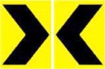

56. Tiêu phản quang
56.1. Quy định chung đối với tiêu phản quang
56.1.1.
Tiêu phản quang là thiết bị dẫn hướng được gắn các công cụ phản quang để
dẫn hướng xe chạy vào ban đêm hoặc trong điều kiện sương mù, điều kiện hạn
chế tầm nhìn. Tiêu phản quang được bố trí tại các nơi mà tuyến đường có
thể gây hiểu lầm hoặc chưa rõ về hướng đường. Chiều cao đặt tiêu phản
quang phù hợp với địa hình, quy mô tuyến đường, bảo đảm tiêu phản quang
phát huy tác dụng dẫn hướng.
56.1.2.
Tiêu phản quang phải gắn công cụ phản quang cho phép nhìn rõ vào buổi tối
dưới ánh đèn pha ô tô đạt tiêu chuẩn trong điều kiện thời tiết bình thường
ở cự ly 300 m.
56.1.3.
Công cụ phản quang có thể là các tấm nhựa phản quang, các khối kim loại
gắn phản quang, màng phản quang dán trên các miếng kim loại v.v... Công cụ
phản quang có thể có dạng hình tròn, hình chữ nhật, hình tam giác hoặc
hình đa giác được gắn lên các lan can phòng hộ, tường bảo vệ hoặc gắn
xuống mặt đường. Công cụ phản quang cũng bao gồm các vật liệu phản quang
dạng dải quấn quanh các cọc tiêu phản quang.
56.1.4.
Tiêu phản quang màu vàng được sử dụng ở các dải phân cách giữa, tại bên
đường các đường một chiều hay bên phải của đường hai chiều. Tiêu phản
quang màu đỏ được sử dụng cho hướng ngược chiều (bên trái) theo chiều đi
của đường hai chiều (để cảnh báo người lái đi nhầm đường) và sử dụng cho
các đường lánh nạn.
56.1.5.
Tiêu phản quang bao gồm: tiêu phản quang bố trí bên đường hoặc trên dải
phân cách, tiêu phản quang dạng mũi tên và đinh phản quang (còn gọi là cóc
phản quang) bố trí trên mặt đường.
56.2. Tiêu phản quang bố trí bên đường hoặc trên dải phân cách
56.2.1.
Phạm vi áp dụng tiêu phản quang bố trí bên đường hoặc trên dải phân cách:
-
Trên các đường cao tốc:
-
Bố trí dọc hai bên đường. Khi đó, nếu lan can phòng hộ cách mép phần
đường xe chạy dưới 2,4 m, gắn tiêu phản quang lên lan can phòng hộ.
Các trường hợp khác có thể bố trí tiêu phản quang dạng cột đặt bên
đường;
-
Bố trí ít nhất một bên trên các nhánh nối của các nút giao khác mức
liên thông.
-
Trên các đường khác:
-
Nên sử dụng tiêu phản quang tại vị trí các đoạn đường bị thu hẹp
phần đường xe chạy mà không có lan can phòng hộ;
-
Các đoạn đường đèo dốc quanh co hạn chế tầm nhìn, trong phạm vi
đường lánh nạn, nơi đường bộ giao nhau với đường sắt;
-
Nơi đường thường xuyên có sương mù cần bố trí tiêu phản quang trên
các vật thể cứng liền kề phần xe chạy như các đầu đảo giao thông, bó
vỉa v.v... khi khó nhận biết các vật thể này về ban đêm.
56.2.2.
Không cần sử dụng tiêu phản quang bố trí bên đường và trên dải phân cách
trong các trường hợp sau:
- Trên mặt đường đã được gắn đinh phản quang liên tục;
- Đã sử dụng tiêu phản quang dạng mũi tên trong các đường cong;
- Tại những nơi có đèn đường chiếu sáng liên tục về ban đêm;
- Làn đường mở rộng dần theo chiều xe chạy.
56.2.3.
Vị trí và khoảng cách tiêu phản quang bố trí bên đường và trên dải phân
cách như sau:
-
Tiêu phản quang đặt cách mép phần xe chạy phía ngoài cùng từ 0,6 m - 2,4
m và cách đều mép mặt đường, lượn cong đều theo mép phần đường xe chạy;
-
Trên đường thẳng, khoảng cách giữa tiêu phản quang không nhỏ hơn 10 m và
không quá 100 m;
-
Trong phạm vi đường cong nằm, khoảng cách nhỏ nhất giữa các tiêu phản
quang là 6 m và tối đa là 100 m phụ thuộc vào bán kính đường cong;
-
Phần đường thẳng tiếp giáp với điểm bắt đầu hoặc kết thúc của đường cong
bố trí 3 tiêu. Tiêu đầu tiên cách điểm bắt đầu hoặc kết thúc của đường
cong là 1S; tiêu thứ hai cách tiêu thứ nhất là 3S, và tiêu thứ 3 cách
tiêu thứ 2 là 6S nhưng cũng không cách xa quá 100 m (S là khoảng cách
giữa các tiêu bố trí trong đường cong).
56.3. Tiêu phản quang dạng mũi tên
56.3.1.
Tiêu phản quang dạng mũi tên bao gồm một biển vẽ dạng mũi tên chỉ hướng
màu đen trên nền vàng gắn trên đỉnh các cột (xem Hình 34a). Tiêu phản
quang dạng mũi tên chỉ hướng ngược chiều (bên trái) màu trắng trên nền đỏ
thường sử dụng cho đường 2 chiều không có dải phân cách giữa (Hình 34b).

Hình 34a - Tiêu phản quang dạng mũi tên
Hình 34b - Tiêu phản quang dạng mũi tên (bên trái) cho đường 2 chiều
56.3.2.
Kích thước tiêu phản quang dạng mũi tên được quy định như sau:
Bảng - Kích thước tiêu phản quang dạng mũi tên
| Kích thước (mm) |
A |
B |
C |
D |
E |
F |
| Đường có tốc độ thiết kế < 60 km/h |
220 |
400 |
110 |
200 |
10 |
10 |
| Đường có tốc độ thiết kế 60 - 80 km/h |
300 |
500 |
150 |
250 |
15 |
15 |
| Đường có tốc độ thiết kế > 80 km/h |
600 |
800 |
300 |
400 |
20 |
20 |
* Ở các đoạn đường đèo dốc, sương mù có thể tăng kích thước lên 1 cấp nâng
cao an toàn giao thông.
56.3.3.
-
Trên các đường cao tốc tại các đường cong có bán kính bằng bán kính tối
thiểu nhỏ nhất theo cấp đường;
-
Trên các nhánh rẽ trái gián tiếp của các nút giao khác mức liên thông;
-
Trên các đoạn đường cong hạn chế tầm nhìn hoặc các đường cong được đánh
giá là điểm đen, điểm tiềm ẩn về tai nạn giao thông; các đường cong được
gắn biển số W.201 “Chỗ ngoặt nguy hiểm” có lưng hướng ra phía vực sâu mà
không có tường bảo vệ hoặc lan can phòng hộ; các đường cong dạng con
rắn.
56.3.4.
Tiêu phản quang dạng mũi tên được bố trí ở phía lưng của đường cong nằm,
bắt đầu từ điểm bắt đầu cho đến điểm kết thúc đoạn cong. Khoảng cách giữa
các tiêu phản quang dạng mũi tên không nhỏ hơn 12 m và không lớn hơn 60 m.
56.4. Đinh phản quang
56.4.1.
-
Trên các đường cao tốc:
-
Bố trí trên các vạch sơn kênh hóa dòng xe tại đầu các mũi đảo tách
dòng và nhập dòng. Trong trường hợp này, cần sử dụng đinh phản quang
trong phạm vi từ mũi đảo thực (đảo cứng) cho đến mũi hết mũi đảo
bằng vạch sơn với cự ly giữa các đinh phản quang tối đa là 6 m.
-
Có thể bố trí đinh phản quang trên các vạch sơn phân chia giữa phần
xe chạy chính và làn dừng xe khẩn cấp.
-
Với đường nhiều hơn 2 làn xe mỗi hướng không có dải phân cách cố định...
-
Đối với đường có 2 làn xe, cần xem xét bố trí đinh phản quang tại tim
đường kết hợp với vạch sơn phân chia chiều đường xe chạy, đặc biệt đối
với tuyến đường tại khu vực miền núi, đường đèo dốc quanh co, nhiều
sương mù, tầm nhìn hạn chế. Trong trường hợp cần thiết, có thế gắn đinh
phản quang tại dọc theo mép đường xe chạy.
-
Chiều rộng đinh phản quang tối thiểu 10cm và không vượt quá chiều rộng
vạch sơn bố trí đinh.
56.4.2.
Có thể sử dụng đinh phản quang màu vàng gắn theo phương ngang đường tại vị
trí mặt đường bị thấp xuống hoặc vồng lên đột ngột theo phương ngang đường
và trên vạch dừng xe nơi phần đường người đi bộ cắt qua không có tín hiệu
đèn điều khiển.
56.4.3.
Đinh phản quang không được nhô cao khỏi mặt đường quá 2,5 cm.